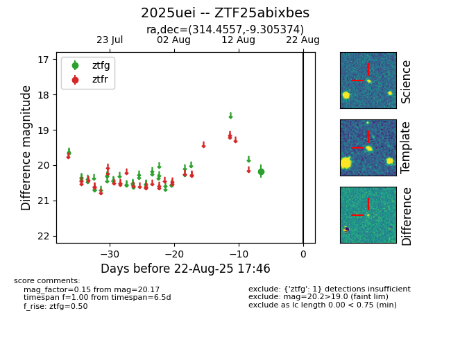

Target 2025uei at 2025-08-22 17:46, see:
FINK: fink-portal.org/ZTF25abixbes
Lasair: lasair-ztf.lsst.ac.uk/objects/ZTF25abixbes
ALeRCE: alerce.online/object/ZTF25abixbes
TNS: wis-tns.org/object/2025uei
YSE: ziggy.ucolick.org/yse/transient_detail/2025uei
alt names
ZTF25abixbes (ztf,alerce)
2025uei (tns,yse)
coordinates:
equatorial (ra, dec) = (314.4557,-9.30537)
galactic (l, b) = (39.1682,-32.26843)
photometry
last ztfg=20.17
1 ztfg detections
